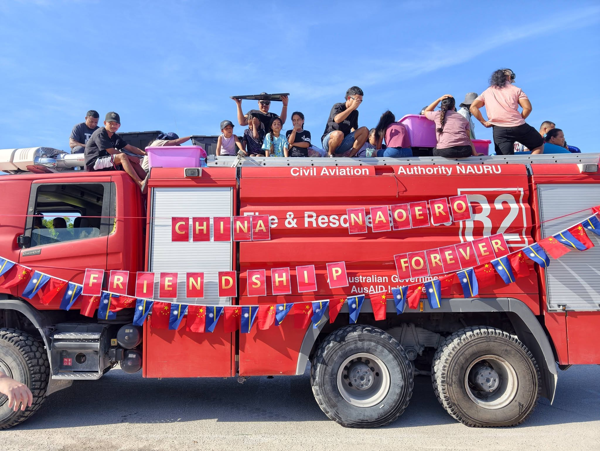

Beijing Counts Victories in Diplomatic Competition with Taiwan — Last Week in the Pacific
A media team from China’s state-owned Xinhua News Agency visited Nauru last week.
The team interviewed President David Adeang and profiled a Chinese-sponsored agricultural project now supplying lettuce to Nauruan supermarkets.
The Jiangmen Agricultural Control Group in Guangdong runs the project, using hydroponic technology to grow lettuce inside converted shipping containers.
The operation sells the lettuce at Egigou supermarket, packaged in plastic bags bearing the Chinese flag, so no customer forgets the source of their produce.
Summary of PRC Activity
China posted a busy week across the Pacific Islands. PNG and China signed two agreements—one on economic cooperation and another one on healthcare. Beijing also advanced its position against Taiwan: PNG closed its Taiwan mission, while Tonga and Nauru affirmed the one-China principle. In Nauru, Chinese enterprises hosted community outreach events and held high-level meetings with government officials.
This Week’s Big Themes:
China, PNG Sign Economic Cooperation Framework
PNG Minister of International Trade and Investment, Richard Maru, announced that PNG will close its Taiwan mission, affirming the one-China principle—the most concrete diplomatic concession Beijing has secured in the Pacific this year.
Following Prime Minister Marape’s delegation to China last month, Beijing and Port Moresby signed a Framework Agreement on Enhanced Economic Partnership between the PRC Ministry of Commerce and PNG’s Ministry of International Trade and Investment. Minister Maru travelled to Suzhou last week for the signing ceremony on May 21, 2026 during the Asia Pacific Economic Cooperation (APEC) Ministers Responsible for Trade Meeting.
The framework agreement is largely aspirational. It acknowledges the advancement of economic ties under the Comprehensive Strategic Partnership and the completion of a feasibility study on a bilateral free trade agreement. Both sides commit to expanding trade relations, pursuing fair and transparent negotiations, aligning development strategies, and strengthening cooperation under the UN and APEC frameworks.
The concrete outcomes emerged after Maru returned to Port Moresby. China offered land for PNG to build a chancery in Beijing and a consulate general in Guangzhou — a direct reflection of the Guangdong–PNG relationship that Marape cultivated during his April visit. The Guangdong government has also subsidized direct flights between Guangzhou and Port Moresby. Maru announced that PNG and China are negotiating Chinese investment in mining, manufacturing, and energy. Separately, on the sidelines of the World Health Assembly in Geneva, PNG and China signed a memorandum of understanding on healthcare cooperation—closely following the US–PNG healthcare agreement signing last month.
Supporting Events
- PNG: PNG and China sign agreement on economic partnership
- PNG: Minister Maru announces deliverables from China visit
- PNG: China, PNG sign healthcare agreement
One-China Principle Affirmations

Beyond PNG’s closure of its Taiwan Mission, Beijing secured several diplomatic gains for the one-China principle across the Pacific last week.
In Tonga, the Tonga China Friendship Association issued a statement reaffirming the one-China principle — followed by the legislature, which released a formal statement affirming the parliamentary delegation’s endorsement of the principle during its visit to China two weeks earlier.
Nauru went further. On 15 May 2026, the cabinet directed all government personnel and state-owned enterprises to observe the one-China principle. The decision characterized Taiwan as a “province” of China—language that drew a sharp response from the Taipei Trade Office in Fiji. The Nauru China Friendship Association then issued its own statement echoing the cabinet’s position.
A pattern is emerging: in both Tonga and Nauru, China Friendship Associations issued one-China statements ahead of or alongside government action, suggesting these associations serve as diplomatic advance teams for Beijing’s political messaging.
Supporting Events
- Tonga: Press statement on parliamentary delegation to China
- Tonga: Tonga-China Friendship Association one-China principle statement
- Nauru: Cabinet decision on the one-China principle
- Nauru: Nauru China Friendship Association Taiwan statement
Chinese Enterprises in Nauru
Chinese enterprises hosted events and met with senior Nauruan officials last week. On 18 May, the Amos Food Group, a Chinese candy manufacturer, partnered with the embassy and the Nauruan government to hold a candy distribution event. Volunteers tossed candy from a truck belonging to Nauru’s Civil Aviation Authority. The truck carried a banner reading “China Naoero Friendship Forever”—draped over the original text identifying the vehicle as a donation from the Australian government.
Ambassador Lyu Jin met with Nauru’s Minister of Phosphate Mining Delvin Thoma and the CEO of a Chinese telecommunications firm active in Nauru. That same CEO, along with representatives from China Harbour Engineering Company and other Chinese enterprise leaders, met separately with Nauru’s Ministry of Public Utilities, Ministry of Sports, and Port Authority.
Supporting Events
- Nauru: AMOS Food Group Candy Distribution
- Nauru: Ambassador meets with RONPHOS Minister
- Nauru: Meeting between Nauruan ministries and Chinese companies
* The PRC Pacific Embassies Monitor provides systematic, open-source tracking of Beijing’s public diplomatic activities across the nine Pacific Island Countries hosting Chinese missions. The monitor captures official embassy social media and website posts, supplemented by local sources, to offer a weekly structured intelligence report that bridges critical information gaps on regional engagement.